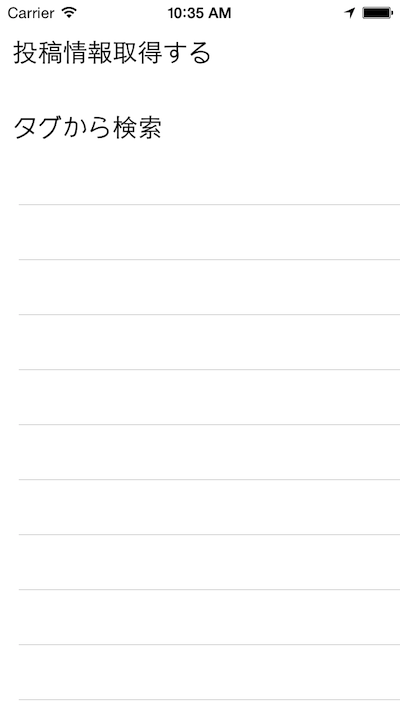
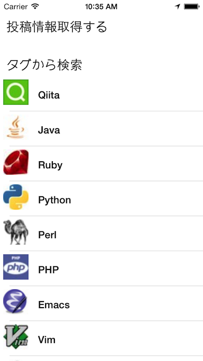
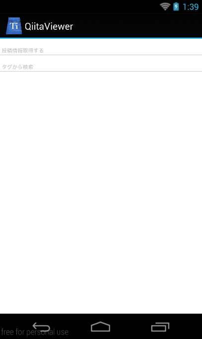
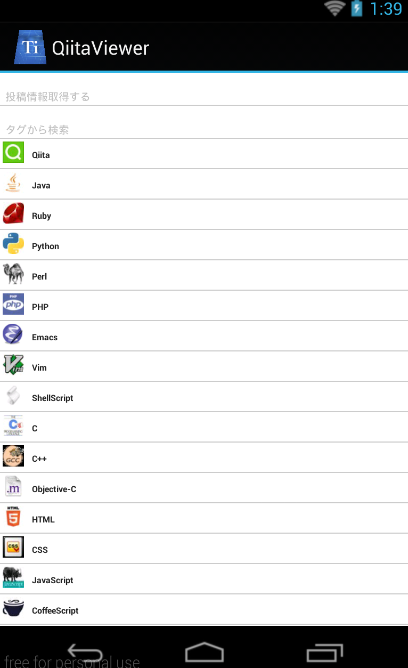
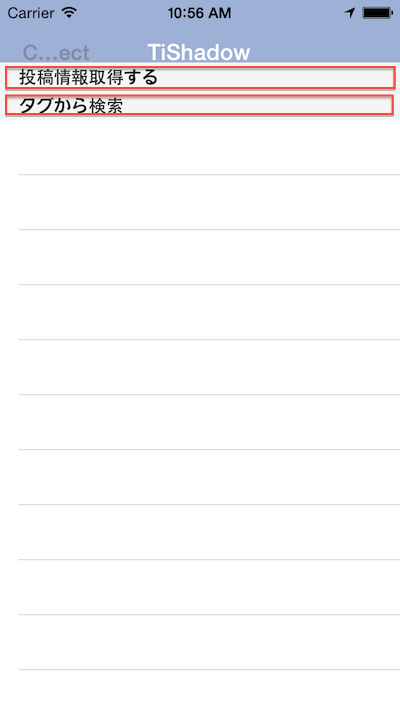
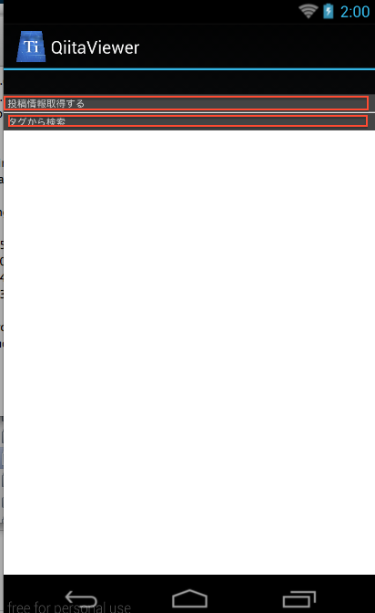

これまで作ってきたようなQiitaのビューワーアプリケーションのような場合に、メニュー一覧から詳細情報に移る場合には、画面遷移させるのが一般的かと思います。
ただ、状況によって、画面遷移させずにメニュー一覧からサブメニューを展開するようなユーザインタフェースを実現したい場合も出てくるかと思います。
例えば、起動時に最小限のメニューを表示しておき、タグから検索という箇所をタッチするとサブメニューのタグ一覧が展開されるようなイメージです。




先ほどの章で紹介したTableViewSectionで投稿情報別に区切る方法をベースに考えます。
メニュー一覧の表示方法として
という２つがあります。
前者を採用すると、以下のように領域がかなり小さくなってしまい、使い勝手があまり良いとはいえないものになります。


後者のTableViewSectionのHeaderViewにカスタマイズしたものを設定方法を利用することで、メニューの幅の部分も好みのサイズに設定可能になるため、この方法を採用します。
これまで作ってきたアプリケーションをベースにして、それぞれのファイルを実装してきます。
ここはそのまま流用できるのと、説明するべき箇所もないのでコードの記載だけにとどめます。
var mainWindow,win;
mainWindow = require("mainWindow");
win = mainWindow.createWindow();
win.open();
ここは大きな変更はないのですが
について追記してます。
exports.mainTable = {
"width": Ti.UI.FULL,
"height": Ti.UI.FULL,
"backgroundColor": "#fff",
"separatorColor": "#ccc",
"left": 0,
"top": 0
};
exports.row = {
"width": Ti.UI.FULL,
"height":60,
"borderWidth": 0,
"className":"entry"
};
exports.iconImage = {
top:5,
left:5,
width:40,
height:40
};
exports.textLabel = {
"width":250,
"height":50,
"top":5,
"left":60,
"color":"#222",
"font":{
"fontSize":16,
"fontWeight":"bold"
}
};
// 引っ張って更新処理中の色を指定
exports.refreshControl = {
tintColor:'red'
};
// QiitaのWebAPIから情報を読み込んでいる状態を示すために ActivityIndicatorを配置しためので
// その設定値
exports.actInd = {
top:"20%",
left:"30%",
height:Ti.UI.SIZE,
width:Ti.UI.SIZE,
zIndex:0,
color: "#f9f9f9",
backgroundColor:"#444",
font: {
fontFamily:'Helvetica Neue',
fontSize:16,
fontWeight:'bold'
},
message: 'Loading...',
style:Ti.UI.iPhone.ActivityIndicatorStyle.DARK
};
exports.tagLabel = {
"width":250,
"height":50,
"top":5,
"left":60,
"color":"#222",
"font":{
"fontSize":16,
"fontWeight":"bold"
}
};
exports.iconImage = {
top:5,
left:5,
width:40,
height:40
};
exports.headerView = {
width:Ti.UI.FULL,
height:60
};
exports.headerTitle = {
top:"50%",
left:10,
width:"90%",
font:{
fontSize:"20%"
}
};
従来あったgetItems()という関数内でアクセスする先のURLをhttps://qiita.com/api/v1/itemsからhttps://qiita.com/api/v1/tagsに変更することでタグ一覧情報を取得する処理が実装できます。 そのためgetItems()とgetTags()はアクセス先のURLが異なるだけで、それ以外の処理は共通化できるため、
という形で実装をしてます。
exports.getLocalJSON = function(){
var sample,file,body;
sample = Ti.Filesystem.getFile(Ti.Filesystem.resourcesDirectory, "sample.json");
file = sample.read().toString();
body = JSON.parse(file);
return body;
};
exports.getItems = function(callback){
var qiitaURL = "https://qiita.com/api/v1/items";
requestToQiitaAPI(qiitaURL,callback);
};
exports.getTags = function(callback){
var qiitaURL = 'https://qiita.com/api/v1/tags';
requestToQiitaAPI(qiitaURL,callback);
};
function requestToQiitaAPI(qiitaURL,callback){
var xhr,method;
method = "GET";
xhr = Ti.Network.createHTTPClient();
xhr.open(method,qiitaURL);
xhr.onload = function(){
var body;
if (this.status === 200) {
body = JSON.parse(this.responseText);
callback(body);
} else {
Ti.API.info("error:status code is " + this.status);
}
};
xhr.onerror = function(e) {
var error;
error = JSON.parse(this.responseText);
Ti.API.info(error.error);
};
xhr.timeout = 5000;
xhr.send();
}
ここは修正箇所が多いので、まずは実装する関数の対応関係について簡単にまとめます
var style = require("style"),
mainTable = Ti.UI.createTableView(style.mainTable),
actInd = Ti.UI.createActivityIndicator(style.actInd),
qiita = require("qiita");
function initTableViewSection(tableview){
var section,
headerView,
menuLit = ['投稿情報取得する','タグから検索'],
_i,
_len,
headerTitle,
rows = [];
for (_i = 0, _len = menuLit.length; _i < _len; _i++) {
headerView = Ti.UI.createView(style.headerView);
headerTitle = Ti.UI.createLabel(style.headerTitle);
headerTitle.text = menuLit[_i];
headerTitle.addEventListener('click',function(e){ // (1)
if(e.source.text === "タグから検索"){ // (2)
actInd.show();
qiita.getTags(function(tags){
var section = createTagSection(tags); // (3)
tableview.insertSectionAfter(1,section); // (4)
actInd.hide();
});
}
});
headerView.add(headerTitle);
section = Ti.UI.createTableViewSection({"headerView":headerView});
rows.push(section);
}
tableview.setData(rows);
}
function createTagSection(tags){ // (5)
var section,_i,_len,style = require("style"),row,tagLabel,iconImage;
section = Ti.UI.createTableViewSection();
for (_i = 0, _len = tags.length; _i < _len; _i++) {
row = Ti.UI.createTableViewRow(style.tagRow);
tagLabel = Ti.UI.createLabel(style.tagLabel);
iconImage = Ti.UI.createImageView(style.iconImage);
tagLabel.text = tags[_i].name;
iconImage.image = tags[_i].icon_url;
row.add(tagLabel);
row.add(iconImage);
section.add(row);
}
return section;
}
exports.createWindow = function(){
var win = Ti.UI.createWindow({
title:"QiitaViewer"
});
win.add(mainTable);
win.add(actInd);
initTableViewSection(mainTable);
return win;
};